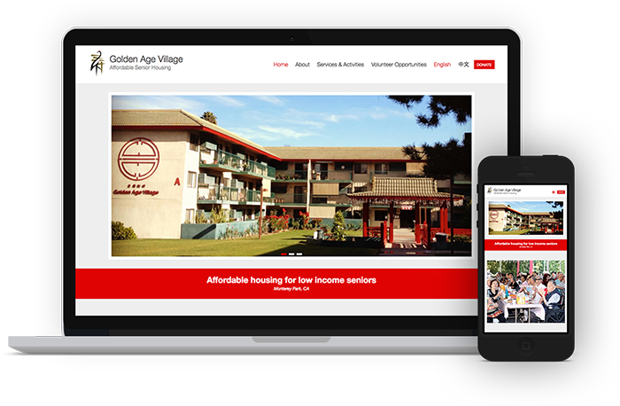

Golden Age Village
While volunteering to lecture elders living in Golden Age Village, a senior apartment, about usage of smart devices, I had the opportunity to create a website for this nice living community.

This was my first time building a website with WordPress by customizing a theme. Through reading blog posts, watching YouTube videos and most importantly making this website, I've learned a lot.
What I've Learned
- Modify WP theme by editing the theme templates
- SEO related plugins, tools and best practices
- Set up bilingual site
- Translate WordPress themes
- Overlay and centered text on image using HTML, CSS and jQuery
Tools
CMS: WordPress
Theme: Esteem Free Edition
Software: Poedit - WP theme translation editor.
Online tool: Kraken.io - Image optimizer
WordPress Plugins:
- Contact Form 7 - Contact form.
- Breadcrumb NavXT - Adds a breadcrumb navigation showing the visitor's path to their current location.
- Foo Gallery - Gallery management tool.
- Polylang - Adds multilingual capability.
- Shortcodes Ultimate - Pack of shortcodes.
- Black Studio TinyMCE Widget - Adds a new "Visual Editor" widget type based on the native WordPress TinyMCE editor.
- Yoast SEO - An all-in-one SEO solution.
- Google XML Sitemaps - Generate an XML sitemap.
- WP Super Cache - Very fast caching plugin.